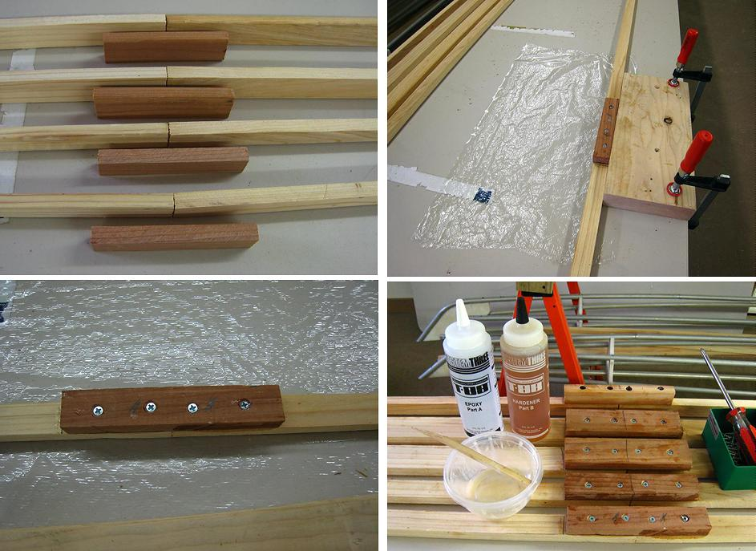

| Stringers | Menu Previous Page Next Page |
|

Since 10ft boards were used for the stringers on the 13ft Sea Bee, that left a section to be scarfed or butted near the stern. I've used scarfing previously, so I decided to experiment with a simple butt joint this time around. 6" redwood plates are screwed and glued with T-88 Epoxy atop the butted joint. This method, though not very attractive, is quite strong. Once the skin is on...out of sight, out of mind. To avoid having to scarf or butt / plate the stringers, I recommend the use of full length stringers. The next page shows the completed frame with the gunwale plates shaped to avoid contact with the deck skin.
|
|